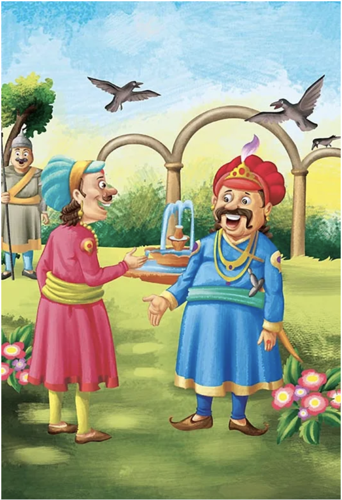

Story: The Lion and the Mouse
A lion was once sleeping in the jungle when a mouse started running up and down his body just for fun.
This disturbed the lion’s sleep, and he woke up quite angry.
He was about to eat the mouse when the mouse desperately requested the lion to set him free.
“I promise you, I will be of great help to you someday if you save me.”
The lion laughed at the mouse’s confidence and let him go.
One day, a few hunters came into the forest and took the lion with them.
They tied him up against a tree. The lion was struggling to get out and started to whimper.
Soon, the mouse walked past and noticed the lion in trouble. Quickly, he ran and gnawed on the ropes to set the lion free.
Both of them sped off into the jungle.
Moral of the Story
small act of kindness can go a long way.
Story: Count Wisely
One day, king Akbar asked a question in his court that left everyone in the courtroom puzzled.
As they all tried to figure out the answer, Birbal walked in and asked what the matter was.
They repeated the question to him.
The question was, “How many crows are there in the city?”
Birbal immediately smiled and went up to Akbar.
He announced the answer; he said there were twenty-one thousand, five hundred and twenty-three crows in the city.
When asked how he knew the answer, Birbal replied, “Ask your men to count the number of crows.
If there are more, then the relatives of the crows must be visiting them from nearby cities.
If there are fewer, then the crows from our city must be visiting their relatives who live outside the city.”
Pleased with the answer, Akbar presented Birbal with a ruby and pearl chain.
Moral of the Story
Having an explanation for your answer is just as important as having an answer.